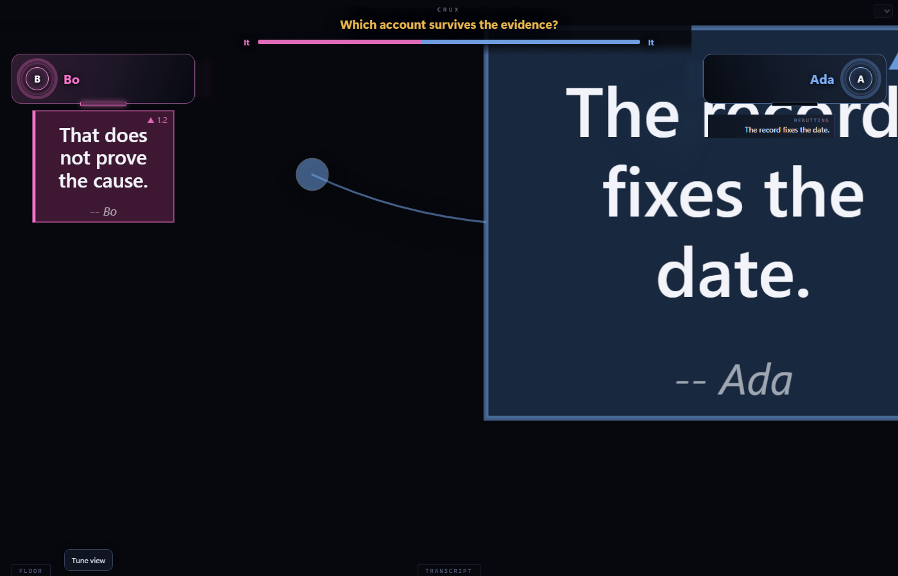
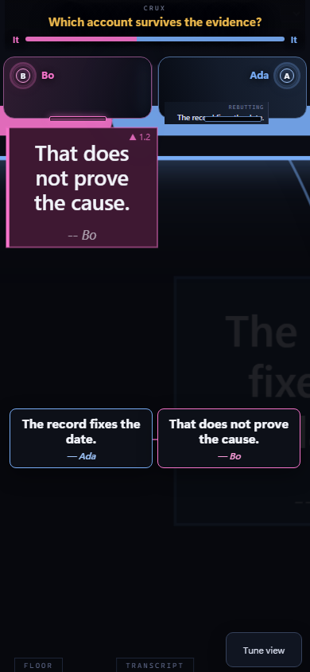
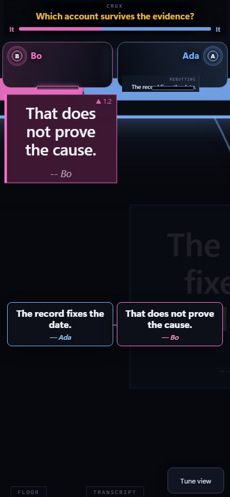

A voice in the room. A map of the ideas.
How Sage
works.
A reviewer-friendly walkthrough of what Sage does in a Discord voice room — and how consent works.
What Sage does.
Sage joins a Discord voice room, listens through Discord's voice API, and turns the conversation into a live public “debate map” — claims, challenges, evidence, and who said what. She also sometimes speaks (using ElevenLabs voices) when she's directly addressed or has something clearly useful to add.
Why she needs the intents she asks for.
The Server Members intent keeps her stored participant profiles (name, role, past conduct) synced when people join, get renamed, or leave — otherwise she'd have to look everyone up on every single message, which wouldn't scale. The Message Content intent lets her pick up evidence links and files posted in the room's text chat without making people @mention her every time, which is the natural way people already share sources in a discussion.
The board, live.
Four frames from a real session on the public board. The room was livestreamed and recorded at the time — these captures are of the public debate map Sage produces, not of individual participants.



What people see, and how consent works.
The room Sage runs in is livestreamed and recorded — being in it means being on the stream. The first time she meets you, she posts one message in the room's side chat: who she is, that the room is livestreamed, how to opt out, and where to email for data removal. No DMs. No buttons.
Opting out (tell her out loud or in text) stops her hearing and recording you, but doesn't mute your microphone — so if you want off the livestream too, stop talking or leave the room. Full details: /privacy.
When the board is quiet.
The live board at /board shows an offline placeholder when no Sage session is running — that's the neutral state, not a bug. Come back during a live discussion to see the map populate in real time.